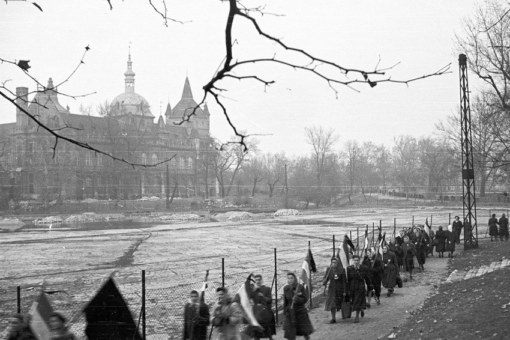

Eredménye
A munkástanácsok és más forradalmi szervek december elejéig folytatták a politikai sztrájkot, tárgyalóasztalhoz kényszerítve a Kádár-kormányt. A Nagy-budapesti Központi Munkástanács (NBKMT) november 14-én alakult meg, és az ellenállás központja lett. November 23-án néma tüntetéssel emlékeztek meg a forradalom kitöréséről.
Nagy Imrét november 22-én a jugoszláv követségről kicsalták és Romániába internálták. December 4-én gyászruhás asszonyok tüntettek Budapesten. A Népszabadság pártlap terjesztését sztrájk és szabotázs akadályozta.
A szovjetek nyílt támadással válaszoltak az ellenállásra.